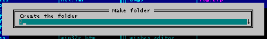

InputBox
Функция InputBox позволяет ввести одну строку текста.
intptr_t WINAPI InputBox(
const GUID *PluginId,
const GUID *Id,
const wchar_t *Title,
const wchar_t *SubTitle,
const wchar_t *HistoryName,
const wchar_t *SrcText,
wchar_t *DestText,
size_t DestSize,
const wchar_t *HelpTopic,
INPUTBOXFLAGS Flags
);
Параметры
PluginId
Указатель на GUID плагина (для вашего плагина, GUID должен быть таким же, что и в поле
GlobalInfo.Guid функции
GetGlobalInfoW).
Id
Указатель на GUID текущего сообщения. GUID должен быть уникальным.
Title
Заголовок окна ввода. Может быть равен NULL или L"".
SubTitle
Приглашение на ввод данных. Может быть равен NULL или L"".
HistoryName
Адрес строки для "истории". Установите в NULL, если "история" ввода не используется.
SrcText
Исходные данные для ввода и редактирования. Может быть равен NULL или L"".
DestText
"Приёмник" введённых данных. Может указать на ту же область памяти, что и SrcText.
DestSize
Размер "приёмника" в символах, с завершающим символом '\0'.
HelpTopic
Адрес строки с
названием темы помощи в формате "<FullPath>Topic", например:
L"<D:\\FAR\\Plugins\\Foo\\>FooInfo"
Установите в
NULL если подсказка не используется.
Flags
Может быть комбинацией следующих значений (тип
INPUTBOXFLAGS):
| Константа | Описание |
|---|
| FIB_ENABLEEMPTY |
даже если строка ввода пуста функция вернёт значение TRUE |
| FIB_PASSWORD |
используется для ввода пароля - вводимый текст на экране отрисовывается символами '*' |
| FIB_EXPANDENV |
после успешного ввода, в строке DestText идентификаторы переменных окружения заменяются на их значения, например, если пользователь ввёл '%TEMP%', то DestText будет содержать 'C:\TEMP' |
| FIB_NOUSELASTHISTORY |
не использовать предыдущее значение из истории, оставить строку ввода пустой; актуален, если параметр HistoryName не равен NULL |
| FIB_BUTTONS |
показать разделительную линию и кнопки [Ok] и [Cancel]. Диалог увеличится на 2 строки |
| FIB_NOAMPERSAND |
не показывать в приглашении ввода амперсанд, использовать его для определения горячей клавиши |
| FIB_EDITPATH |
говорит, что строка ввода будет содержать имена реальных файловых объектов |
| FIB_EDITPATHEXEC |
ограничивать автодополнение в строке ввода только именами исполнимых файлов (%PATHEXT%), которые находятся в каталогах, перечисленных в %PATH% |
| FIB_NONE |
нулевой флаг |
Возвращаемое значение
Функция возвращает TRUE в случае успешного ввода строки и FALSE, если пользователь прервал ввод.
Замечания
Far Manager использует данную функцию, когда пользователь пытается создать папку:

Пример
Смотрите также: